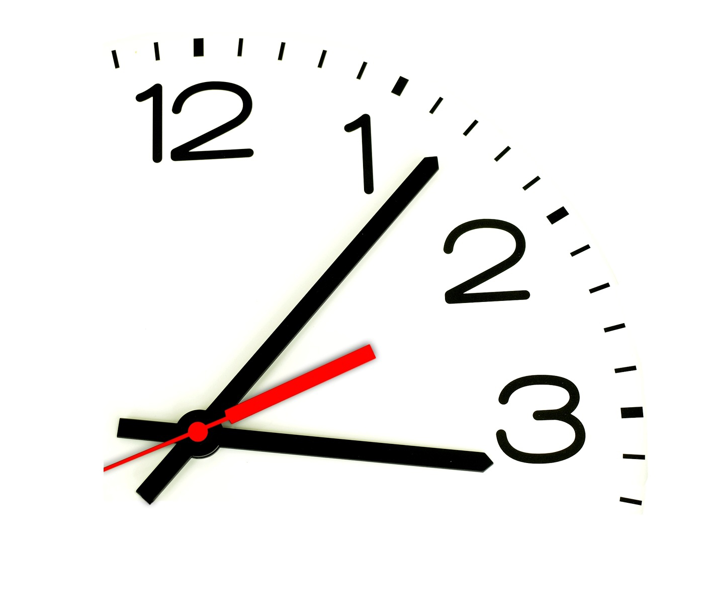

Нет не мало времени мы имеем, а много теряем. Жизнь дана нам достаточно долгая, и её с избытком хватит на свершение величайших дел, если распределить её с умом. Но если она не направляется доброй целью, если наша расточительность и небрежность позволяет ей утекать у нас меж пальцев, то когда пробьет наш последний час, мы с удивлением обнаруживаем, что жизнь, течения которой мы не заметили, истекла.
Сенека
©www.bsuir.by/ru/kaf-ikt